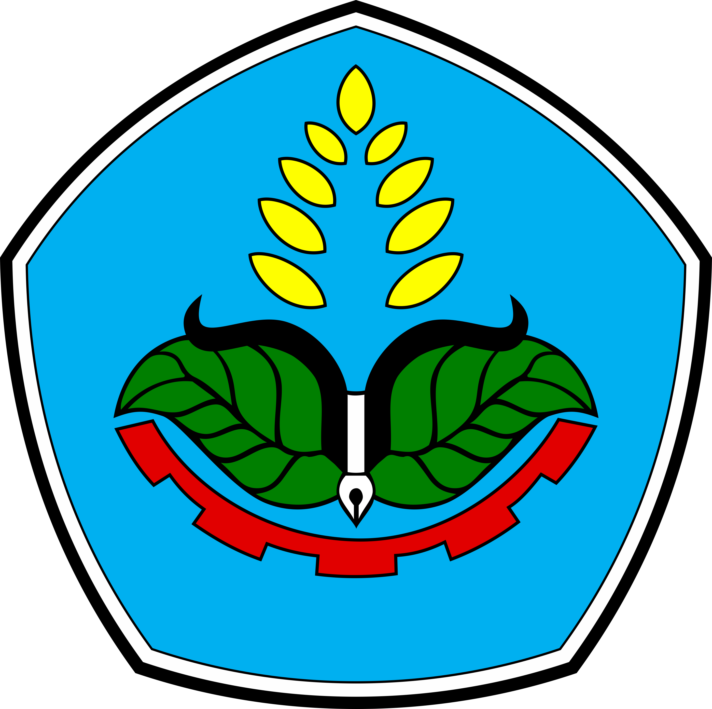

Home / Formulir / Hubungi pengelola
Mari mulai percakapan.
Sampaikan pertanyaan atau rencana kerja sama Anda. Tim pengelola TEFA Canning Polije siap membantu koordinasi selanjutnya.

POLITEKNIK NEGERI JEMBERTeaching Factory (Tefa) adalah konsep pengajaran berbasis standar industri dalam lingkungan nyata. Di Politeknik Negeri Jember (Polije), terdapat Tefa Canning yang memproduksi pangan kaleng, salah satunya ikan sarden.
Masuk ↗Sampaikan pertanyaan atau rencana kerja sama Anda. Tim pengelola TEFA Canning Polije siap membantu koordinasi selanjutnya.